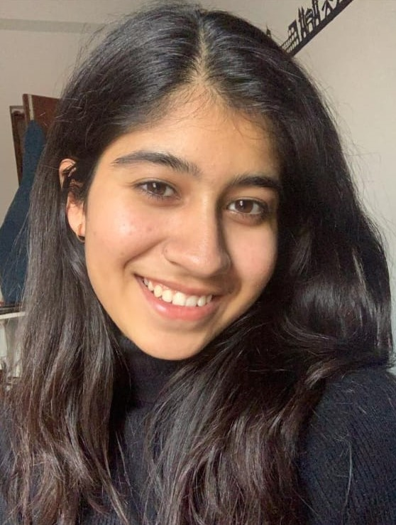

Hello,
I'm Ananya Sharma

Objective
Creative and ambitious 2nd-year student pursuing a career in UX and web development. With a passion for delivering visually appealing and user-friendly digital experiences, I bring a unique perspective and innovative ideas to every project. Constantly learning and improving my skills, I am dedicated to staying current with industry trends and standards. Excited to collaborate with others in the field and contribute to meaningful projects.
Education
- St. Annes Convent School, Chandigarh - 10th (2019)
- Govt. Model Sr. Sec. School, Sector-16, Chandigarh - 12th, Non-medical (2021)
- Chandigarh University, Punjab - Bachelor of Engineering-BE, Computer Science (Currently pursuing)
Work experiences
- Social Media Head - GeeksforGeeks Student Chapter - CU, Chandigarh (11 months)
- Managed social handles of the community
- Content Writing
- Created posts and videos using Canva
Skills
- HTML, CSS & JavaScript
- Python
- C++
- Problem-solving and analytical skills
- Efficient Communication Skills
Achievements
- 4th position in Spark AR Community Hackatho
Contact Me